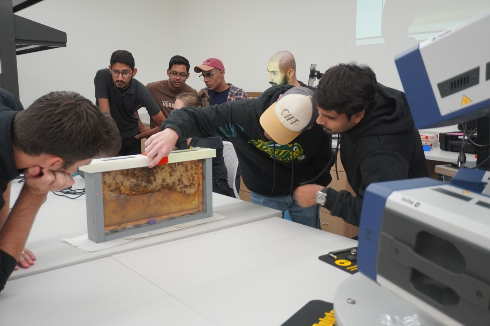
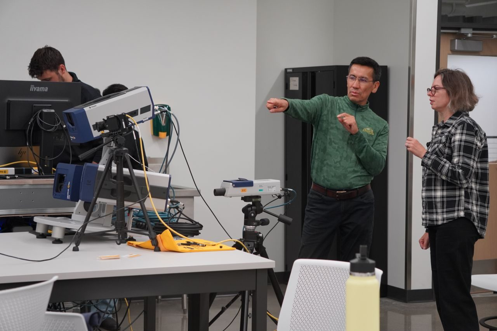
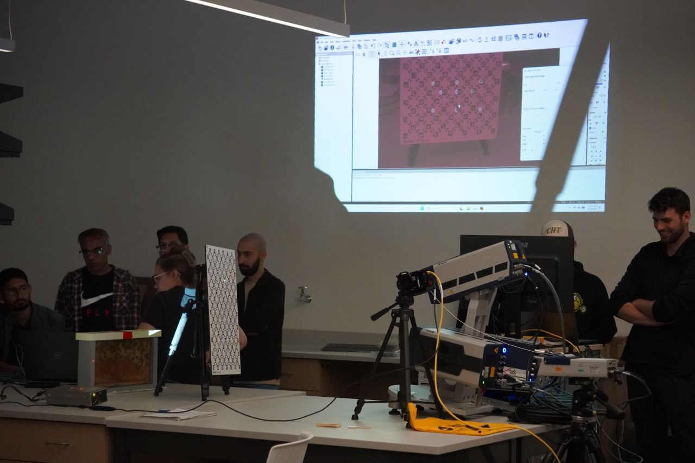
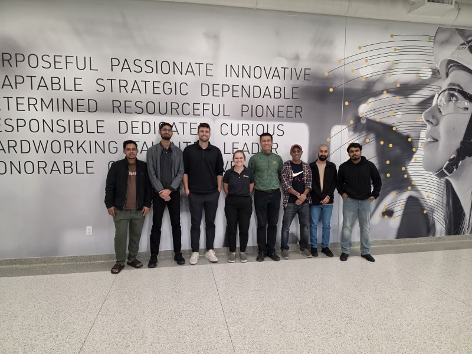

Every Vibration Counts: Training on the New QTec 3D Laser Vibrometer
NDSU hosted a two-day Polytec-led training on its new PSV QTec 3D Scanning Vibrometer, acquired through an NSF-MRI award (No. 2510004) led by Dr. Eshkabilov. Faculty and students from six departments covered 1D/3D measurement, modal analysis and MEMS — highlighted by a live 3D vibration measurement of an observation honey bee colony with high-speed video.
Read story
2 min read



